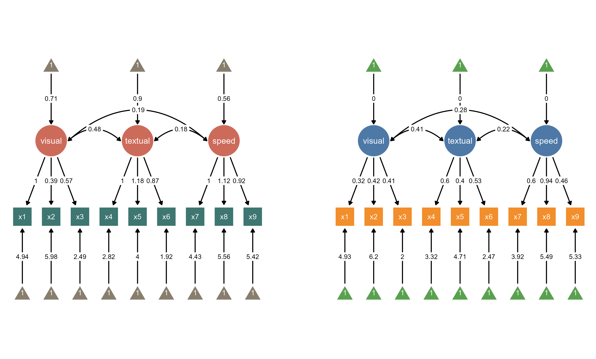

7 Multi-Group SEM Visualization
The multi-group analysis feature in ggsem allows you to compare structural equation models across different populations or conditions. This powerful functionality enables testing measurement invariance and examining how structural relationships vary between groups.
7.1 Setting Up Multi-Group Analysis
7.1.1 Example: Creating Multiple SEMs from Multi-Group Data
This example demonstrates how to visualize a SEM diagram for just one group (e.g., Pasteur school) from a multi-group dataset, using the group management system to isolate and customize specific groups.
Step 1: Load Your Data and Model
Download data (CSV format) from online and upload it in the app
https://www.smin95.com/HolzingerSwineford1939.csv
demo_data <- read.csv('https://www.smin95.com/HolzingerSwineford1939.csv')
head(demo_data) # first six rows id sex ageyr agemo school grade x1 x2 x3 x4 x5 x6
1 1 1 13 1 Pasteur 7 3.333333 7.75 0.375 2.333333 5.75 1.2857143
2 2 2 13 7 Pasteur 7 5.333333 5.25 2.125 1.666667 3.00 1.2857143
3 3 2 13 1 Pasteur 7 4.500000 5.25 1.875 1.000000 1.75 0.4285714
4 4 1 13 2 Pasteur 7 5.333333 7.75 3.000 2.666667 4.50 2.4285714
5 5 2 12 2 Pasteur 7 4.833333 4.75 0.875 2.666667 4.00 2.5714286
6 6 2 14 1 Pasteur 7 5.333333 5.00 2.250 1.000000 3.00 0.8571429
x7 x8 x9
1 3.391304 5.75 6.361111
2 3.782609 6.25 7.916667
3 3.260870 3.90 4.416667
4 3.000000 5.30 4.861111
5 3.695652 6.30 5.916667
6 4.347826 6.65 7.500000tail(demo_data) # last six rows id sex ageyr agemo school grade x1 x2 x3 x4 x5
296 345 1 13 3 Grant-White 8 6.166667 6.50 3.000 3.000000 4.25
297 346 1 13 5 Grant-White 8 4.000000 7.00 1.375 2.666667 4.25
298 347 2 14 10 Grant-White 8 3.000000 6.00 1.625 2.333333 4.00
299 348 2 14 3 Grant-White 8 4.666667 5.50 1.875 3.666667 5.75
300 349 1 14 2 Grant-White 8 4.333333 6.75 0.500 3.666667 4.50
301 351 1 13 5 Grant-White NA 4.333333 6.00 3.375 3.666667 5.75
x6 x7 x8 x9
296 2.857143 3.043478 4.25 5.666667
297 1.000000 5.086957 5.60 5.250000
298 1.000000 4.608696 6.05 6.083333
299 4.285714 4.000000 6.00 7.611111
300 2.000000 5.086957 6.20 4.388889
301 3.142857 4.086957 6.95 5.166667Note that this dataset contains a column containing identifer for different levels of variables.
Specify your multi-group model in lavaan syntax:
Visual =~ x1 + x2 + x3 Textual =~ x4 + x5 + x6 Speed =~ x7 + x8 + x9
Step 2: Configure Multi-Group Settings
Check the box for “Multi-Group Data” to enable group-specific analysis
Grouping Variable refers to the column name in your uploaded dataset. The dropdown gets updated accordingly with available columns.
- Select: Grouping Variable: school
- Group Level refers to each level in the selected Grouping Variable. The dropdown gets updated accordingly.
- Select: Group Level: Pasteur
Step 3: Set Model Constraints and Layout
- Three types of model fitting are available with different levels of model constraints
- Select your preferred invariance level (configural, metric, or scalar).
- Use results from multi-group model comparisons to determine which model should be visualized:
- Check model fit statistics to ensure your chosen invariance level is appropriate
- If metric invariance holds, you might constrain loadings across groups
- If invariance fails, you may need to keep parameters free for each group
Choose Tree2 for SEM layout in the Layout Settings panel
Change its location so that its Center X is
-35Intercept nodes are visualized by default for multi-group data (can be toggled off if desired by unchecking the box)
Step 4: Generate and Identify the Diagram
Click “Draw a SEM” to generate the first group’s diagram
The SEM diagram that you will generate will have its group id assigned as 1
- Notice that its group id is set as “1” as we specified before in Assign Group in the Output Tables’ Group Column
Step 5: Create a Second Group Diagram

Change the Group Level from “Pasteur” to “Grant-White”
Check if the Assign Group input is “2” to for a new group ID (it should be set automatically).
Change its location so that its Center X is
+35Click “Draw a SEM” again to generate the second group’s diagram
The new diagram will be created with group ID “2”
Both diagrams now exist in the same workspace with different group identifiers
Step 6: Manage Group-Specific Modifications
- You can selectively modify elements from one group but not another
Use the “Which Group to Modify” dropdown to ensure you’re editing group “1” (Pasteur)
Apply visual customizations that will only affect this specific group
With “1” group selected:
Select its group ID (“1”) in Which Group to Modify dropdown.
Modify the global settings of node aesthetics (check the box All Nodes):
Set Latent Node Color to
#CD6B5B(red)Set Observed Node Color to
#3E7671(green)Set Intercept Node Color to
#887E6D(brown)Or in Choose Color Palette dropdown, choose
Earth Tones
Click “Apply Changes”
For Group “2” (Grant-White):
Select its group ID (“2”) in Which Group to Modify dropdown
Modify the global settings of node aesthetics (check the box All Nodes):
Set latent node color to
#4E79A7(blue)Set observed node color to
#F28E2B(orange)Set intercept node color to
#59A14F(green)Or in Choose Color Palette dropdown, choose
Vibrant Primary
Click “Apply Changes”
Now, you have two SEM diagrams side-by-side.

7.2 Intercept Visualization
Multi-group analysis includes options for displaying intercept terms:
Check “Show intercept nodes” to visualize intercept parameters
Intercept nodes appear as triangles in the diagram
Useful for understanding mean structure differences between groups
7.3 Practical Workflow Example
Complete Multi-Group Analysis:
Load data with grouping variable (e.g., school, gender, treatment condition)
After checking the box Multi-Group Data, check the Grouping Variable (e.g.,
school) and plot multi-group SEM diagrams.Explore configural, metric and scale invariance.
Compare groups visually by highlighting significantly different paths between groups (Highlight Group Differences) or group-specific differences or invariance (Highlight Multi-Group Invariance).
Examine modification indices for sources of misfit
Use Interactive Parameter Visualization to further modify aesthetics.
This is an example of what multi-group SEM visualization output could look like with ggsem. Red paths are significantly different paths between two groups. Purple paths represent where estimated parameters are constrained to be equal between groups, while brown paths denote where estimated parameters are group-specific (hence, different between groups). These can all be highlighted automatically in ggsem.

7.4 Group-Specific Customization
Each group maintains independent aesthetic settings:
Node colors, sizes, and shapes can vary by group
Edge properties (colors, widths, styles) are group-specific
Label formatting can be customized per group
Layout adjustments can be made separately for each group
7.5 Summary: Multi-Group SEM Visualization
The multi-group functionality enables analysis of structural equation models across different population subgroups within a single dataset. Users can specify a grouping variable from their data and select individual group levels to visualize. Each group is assigned a unique identifier that allows for independent customization of visual properties including node colors, sizes, and layout preferences.
The system supports configural, metric, and scalar invariance testing to examine whether model parameters remain consistent across groups. Users can generate separate diagrams for different groups while maintaining them in the same workspace, facilitating visual comparison of model structures and parameter estimates across populations. This approach provides a method for examining measurement invariance and group differences while maintaining consistent model specification across subgroups.